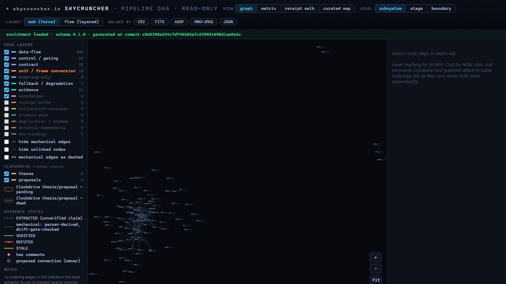
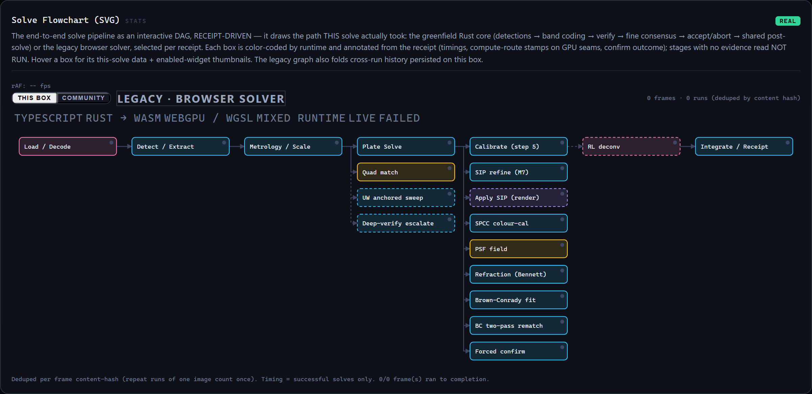
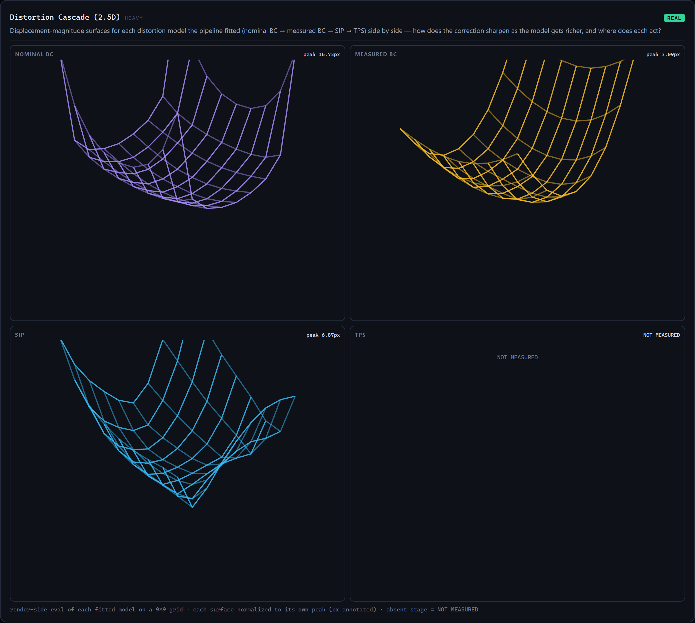
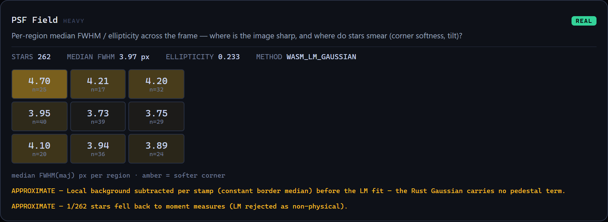
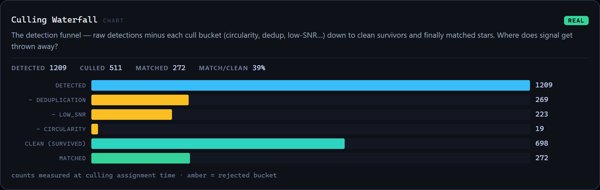
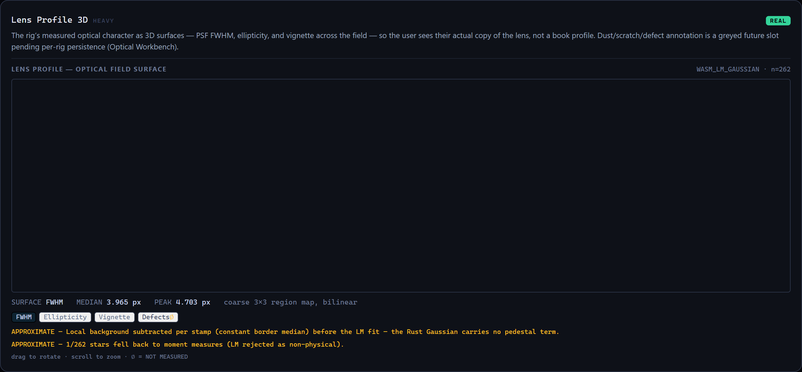

An astrophotography processing pipeline that shows its work.
RAW/FITS ingest, blind plate solving, measured lens and atmospheric correction, color calibration, PSF diagnostics with windowed deconvolution, FITS/ASDF and tabular Arrow export, and a database of every measurement — each value measured, labeled approximate, or absent.
Windows installer. Star data (~1.3 GB total) downloads in-app on first run.
as of 2026-07-22
Your rig, measured.
Measures your lens on every frame: distortion, a SIP layer with atmospheric refraction separated out where site and time are known, and a final thin-plate-spline pass for what the parametric models miss.
See how SkyCruncher works.
The full pipeline as an interactive graph — every module, every data seam, every evidence state. Three views: force web, adjacency matrix, and a step-by-step procedure walk.

909 nodes, 1,534 edges, extracted from the codebase and drift-gated.Open the Pipeline DAG →The measurement corpus.
Every frame processed leaves a measurement receipt, and the receipts add up to a database. These are the project corpus numbers, published as they stand: today's snapshot is the pre-cutover baseline — the honest before. New snapshots land here as the corpus re-runs on the current solver core; the story is in the data arriving.
as of 2026-07-12 · pre-cutover solver · a fresh regeneration replaces this snapshot
Blind solve rate over time
Solve wall time over time
What it shows you.
Every panel below is rendered from a real measurement record — no mockups, no sample data.





Runs on your machine.
Solves happen locally; your images and measurements never leave your computer. Once the star data is downloaded, the network is not involved.